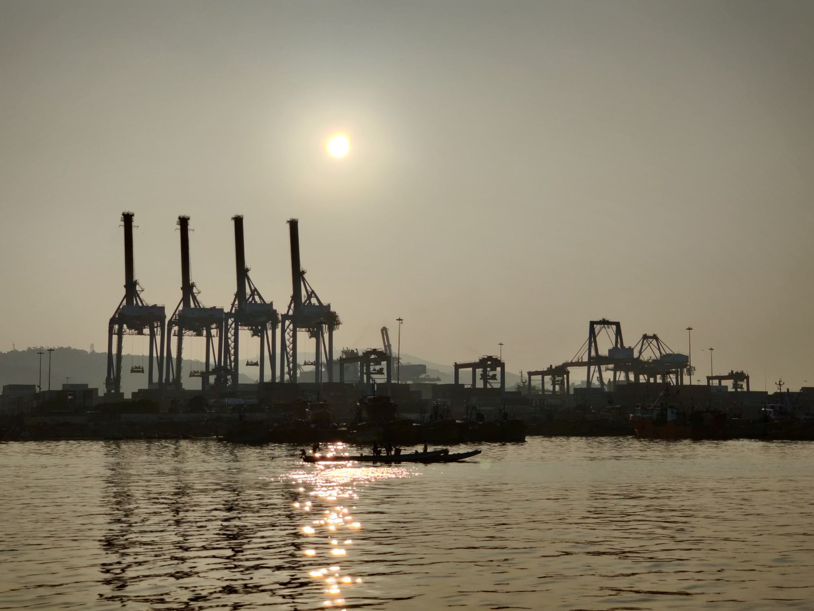
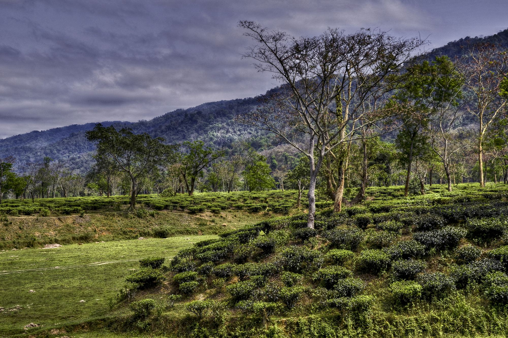

Ideas to implementation.

What we do
PPIC works where economic development, social progress and environmental sustainability meet.
We produce policy insight that institutions can act on, look for emerging development opportunities, strengthen the places where innovation happens, and bring the right partners to the same table. Our work is organised in two areas: student innovation and entrepreneurship, and government advisory.
How we work
Every engagement follows four steps: we anticipate, research, design and connect.
Anticipate
Identify emerging policy challenges and opportunities.
Research
Generate evidence and actionable insights.
Design
Develop policy, innovation and development solutions.
Connect
Mobilise stakeholders and strategic partnerships.

Student–Industry Connect
The initiative aims to connect school students in Andhra Pradesh with the state’s 23 industrial clusters, and to give them exposure to sectors such as drones, space, quantum technologies and port services.
About the initiativeWhere we work
For the next three to six months our focus is on Andhra Pradesh and Assam.

Andhra Pradesh
Student–industry exposure across the state’s industrial clusters, and advisory work with state institutions.

Assam
The second of our two initial focus states. The programmes we take there will be set out as they are agreed.
Our partners
We work with state governments, public-sector enterprises and academic institutions.
 Government of Andhra Pradesh
Government of Andhra Pradesh Government of Assam
Government of Assam NMDC
NMDC Oil India
Oil India Indian Institute of Technology Mandi
Indian Institute of Technology Mandi